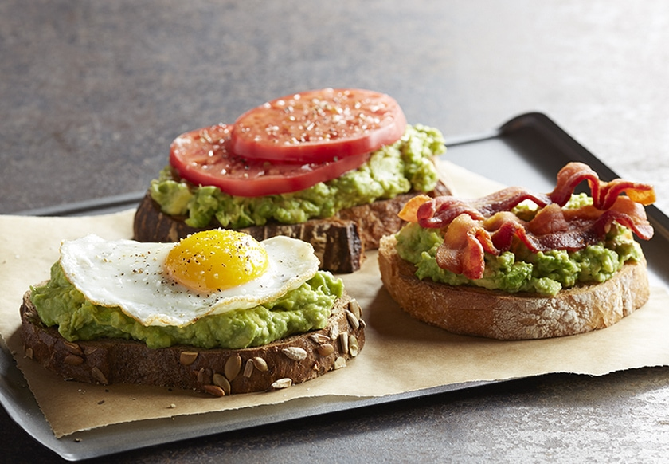

California Avocado Toast Three Ways

Three Favorite Ways to Top California Avocado Toast
Mashed or sliced California Avocados on toast are easy and delicious for breakfast or for a snack, and can be
added to in many different ways to for a craveable taste sensation.
This will be the rave of all your brunch parties!
Ingredients
- 1 slice bread (try thick, crusty artisian breads, sourdough, rye, wheat, multigrain or whatever bread you prefer)
- 1/2 ripe, Fresh California Avocados, peeled, seeded, and mashed
- 1 egg - Optional
- 2 slices heirloom or beefsteak tomato - Optional
- 2 slices cooked bacon (try maple bacon, peppercorn bacon, turkey bacon, or veggie bacon) - Optional
- Fresh cracked pepper - Optional
- Sea salt to taste - Optional
Steps
California Avocado Toast with Fried Egg
- Toast 1 slice bread and spread with 1/2 ripe, Fresh California Avocado (,ashed or sliced). Spray a small nonstick skillet with cooking spray and fry one egg as desired.
- Place cooked egg onto avocado toast, sprinkle with salt and pepper if desired.
California Avocado Toast with Heirloom Tomatoes
- Toast 1 slice bread, spread with 1/2 ripe, Fresh California Avocado (mashed or sliced) and 2 slices of heirloom or beefsteak tomato.
- Top with fresh cracked pepper and sea salt to taste.
California Avocado Toast with Bacon
- Toast 1 slice bread, spread with 1/2 ripe, Fresh California Avocado (mashed or sliced) and 2 slices cooked bacon.
Notes
*Large avocados are recommended for this recipe. A large avocado averages about 8 ounces. If using smaller or larger size avocados adjust the quantity accordingly.
Return to main page